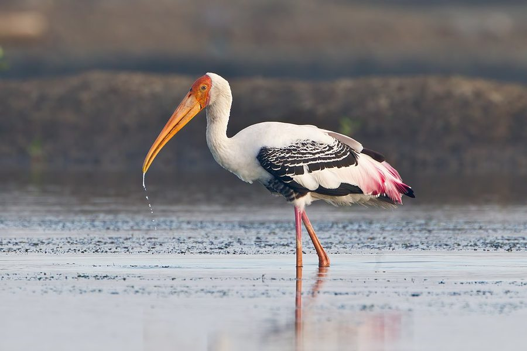

जांघिलPainted Stork
Mycteria leucocephala · Ciconiidae · BRD-0076

- Scientific nameवैज्ञानिक नाम
- Mycteria leucocephala (Pennant, 1769)
- Familyकुल
- Ciconiidae
- Hindiहिंदी
- जांघिल / कठसारंग
- Local namesस्थानीय नाम
- janghil, jaanghil, kathsaringh, kath sarang, dokh
- Status hereयहाँ की स्थिति
- native
- Movementआवागमन
- Moves locally with water and season
- IUCNIUCN
- VU
- Reviewसमीक्षा
- audited and independently read
When to look कब देखें
Present all year.साल भर मौजूद।
Moves locally in response to water levels and food availability; more nomadic during monsoon. All migrants and visitors →
Tell it apart from इनसे अलग पहचानें
जांघिल / Painted Stork
Mycteria leucocephala (Pennant, 1769) — Ciconiidae
जांघिल — भारतीय आर्द्रभूमियों का सबसे रंगीन सारस, जिसका शरीर गुलाबी, पीले, और काले रंग के साथ तालाबों और धान के खेतों में शिकार करता है। इसका सिर सफेद और नंगा, पीली चोंच विशेष रूप से मजबूत बनाई गई है। ये अपनी जगह बदलते हैं — मानसून में पानी भरते ही आते हैं, और सूखने लगते हैं, तो चले जाते हैं।
Quick Identification त्वरित पहचान
| Feature | Description |
|---|---|
| Size | Large, colourful stork; 93–102 cm tall |
| Plumage | Pale pink body; black flight feathers and tail; white head; pink on wings |
| Head | Whitish, bare (no feathers); yellow facial skin |
| Bill | Large, yellow, straight; darker at tip |
| Legs | Long, reddish or yellowish |
| Eyes | Yellow iris |
| Colour | The most colourful stork in the region |
Field tip: A large, distinctively colourful stork with pale pink body, black wings and tail, white head, and yellow bill — is a Painted Stork. The colour pattern is unmistakable. Usually found in small flocks at water bodies.
हिंदी — कैसे पहचानें:
सबसे रंगीन सारस — गुलाबी शरीर, काले पंख।
सफेद सिर, पीली चोंच।
झुंड में रहता है।
Morphology आकारिकी
Biometrics:
| Measurement | Range |
|---|---|
| Total length | 930–1020 mm |
| Wing (flattened chord) | 500–560 mm |
| Tail | 250–300 mm |
| Bill | 150–180 mm |
| Tarsus | 120–150 mm |
| Weight | 2200–3000 g |
Size: 93–102 cm tall; wingspan 150–180 cm. Weight 2200–3200 g. One of the largest storks in eastern UP.
Plumage: Pale pink or pinkish-white on the body. Flight feathers and tail entirely black. The upper wing coverts have a beautiful mixture of pink and black.
Head: Whitish or pale pink; entirely bare of feathers. The bare skin is yellowish-green.
Bill: Large, powerful, yellow with a black tip. Used for striking at fish and larger prey.
Legs: Long, reddish or yellowish; used for wading.
Eyes: Yellow iris; forward-facing for binocular hunting vision.
Breeding plumage: Becomes more intensely pink during breeding season. The bare head skin becomes more brightly coloured.
Sexes: Identical. Juveniles duller, more whitish, with less pink colouration.
Vocalisations. Three main call types:
- Bill-clattering: Loud, distinctive bill-snapping — clack-clack-clack — the most characteristic sound; frequency 1.5–3.0 kHz.
- Grunting: Low grunts at the nest during pair bonding.
- Hissing: Defensive hisses when disturbed.
हिंदी: चोंच की तेज़ क्लिकिंग आवाज़। यही पहचान की आवाज़ है।
Ecological Role पारिस्थितिक भूमिका
Omnivorous predator: Painted Storks feed on a wide variety of aquatic prey:
- Fish (medium to large Channa, Catla, Mystus, Labeo)
- Frogs and toads
- Crabs and crayfish
- Snakes and lizards
- Dragonflies and other large insects
- Occasionally small mammals
Hunting technique: Wades in shallow water and strikes at prey with rapid bill movements. Often hunts in flocks, working together to drive fish into shallow areas.
Water level indicator: Presence and abundance closely tied to water availability. More abundant during monsoon when water levels rise.
Colonial nester: Forms large heronries alongside other storks, herons, and ibises.
Nomadic movement: Moves locally in response to water levels and food availability — abandons areas as wetlands dry up.
हिंदी: मछली, मेंढक, केकड़े, साँप — सब कुछ खाता है। पानी की खोज में यात्रा करता है।
Life Cycle / Phenology जीवन चक्र
Locally nomadic: Moves in response to water levels and food availability. Present year-round but at different locations by season.
Breeding: June–October (monsoon and post-monsoon). Colonial nester in large heronries.
Nesting: Large stick platform nest in tall trees, near water. Trees: tamarisk, peepal, banyan, neem, palm.
Eggs: 3–4 white eggs. Both parents incubate ~28–30 days.
Chicks: Altricial; fed by both parents with regurgitated fish. Fledge at ~8 weeks.
Roosting: Communal roosts in tall trees near major water bodies. Can include hundreds of birds.
Dry season response: Abandons wetlands as they dry up; moves to areas with remaining water.
हिंदी: पानी की तलाश में चलता है। जहाँ पानी है, वहाँ रहता है। मानसून में प्रजनन करता है।
Prey भोजन
| Prey | Hindi | Capture Method |
|---|---|---|
| Medium to large fish | बड़ी मछली | Wading and striking |
| Frogs and toads | मेंढक, टोड | Shallow water gleaning |
| Crabs | केकड़े | Extraction from water |
| Snakes and lizards | साँप, छिपकली | Ground and water predation |
हिंदी: बड़ी मछलियाँ पकड़ने में माहिर है।
Conservation Status संरक्षण स्थिति
IUCN Status: Vulnerable (VU)
Wildlife Protection Act, 1972: Listed under Schedule IV (Protected) of the Wildlife (Protection) Act, 1972, as amended in 2022. Killing or harming a Painted Stork is illegal in India.
Threats: Wetland drainage and destruction; water pollution; lead ammunition; disturbance at colonies; collision with power lines. Habitat loss is the primary threat.
Conservation importance: Eastern UP is an important breeding area for Painted Storks. Wetland protection here is critical for species conservation.
हिंदी: दुर्लभ हो रहा है। कानून में संरक्षित है।
Agricultural / Human Relevance कृषि और मानव संबंध
Fish and amphibian predation: May feed on farmed fish in ponds, but also consumes predatory fish that harm farmed species.
Wetland health indicator: Presence during breeding season indicates productive, well-watered systems. Absence signals wetland degradation.
Neutral to positive cultural status: Beautiful appearance makes it valued by birdwatchers. No significant cultural persecution.
हिंदी: यह रंगीन सारस सुंदर है। पर तालाब की मछलियाँ खा सकता है।
Expected Locally स्थानीय रूप से अपेक्षित
Not a field record. Written from published accounts for eastern Uttar Pradesh. No confirmed local sighting yet — if you have seen it, that is what the atlas needs.
अभी तक स्थानीय पुष्टि नहीं। यह विवरण प्रकाशित स्रोतों से है।
Present year-round in Basti district but with local movements in response to water availability. Most abundant during monsoon months (June–September) when water levels are high. Major heronries are reported along the Ghaghra and Rapti river systems, with hundreds of breeding pairs concentrated in 5–10 large colonies.
Distribution वितरण
Global range: Widespread across Asia, from Pakistan and the Indian subcontinent through Southeast Asia.
In India: Found throughout the Indian plains and some peninsular areas, particularly in wetland regions.
In Uttar Pradesh: Locally distributed, with major concentrations in the eastern districts and along river systems.
In Basti district / eastern UP: Present year-round with local seasonal movements; major stronghold for breeding populations.
Research Questions शोध प्रश्न
Anyone can investigate these | कोई भी इन प्रश्नों की जाँच कर सकता है
- Where are active Painted Stork heronries in your area? / जांघिल के घोंसले कहाँ हैं? — Map breeding colonies in May–October.
- How many breeding pairs are present each year? / कितनी जोड़ियाँ प्रजनन करती हैं? — Count nests in heronries seasonally.
- Do they move to different water bodies seasonally? / ये मौसम में अलग जगह जाते हैं? — Track movement patterns monthly.
- What percentage of flocks are juveniles vs adults? / कितने बच्चे होते हैं? — Age structure during fledging season.
- How has breeding success changed over time? / पिछले 10 साल में सफलता में बदलाव? — Interview wildlife staff at reserves.
Similar Species मिलती-जुलती प्रजातियाँ
| Species | How to tell apart | हिंदी |
|---|---|---|
| Asian Woolly-necked Stork | Black-and-white; smaller; no pink colouration | सफेद-काला, रंग नहीं |
| White Stork | Pure white (vagrant); no pink or black flight feathers | पूरी तरह सफेद |
Field rule: A large, distinctly colourful stork with pink body, black wings, white head, and yellow bill, often in flocks at water bodies — is a Painted Stork. No other stork in eastern UP has this combination of colours.
Taxonomy & Classification वर्गीकरण
Original description. Mycteria leucocephala was described by Thomas Pennant in 1769 in his Indian Zoology as a large painted stork. Type locality: India. The genus Mycteria contains the painted storks of the Old World and Americas.
Subspecies. Monotypic — no subspecies are currently recognised, though the species is geographically variable across its range.
Family and order placement. Order Ciconiiformes, family Ciconiidae (storks), containing 19 species. The genus Mycteria contains 3 species of large storks found in tropical regions of Asia, Africa, and the Americas.
Phylogenetic notes. Molecular studies show that Mycteria leucocephala is sister to the African Painted Stork (M. ibis). The genus is monophyletic.
IUCN status rationale. Assessed as Vulnerable (VU). Populations are declining across the range due to extensive wetland loss and degradation. The breeding season concentration of birds in a few large heronries makes the species vulnerable to localized disturbances or colony failures.
Photo Gallery फोटो गैलरी
फोटो निर्देश: तालाब और नहर के किनारे मानसून में दिखते हैं। रंगीन पंखों और सफेद सिर की फोटो ज़रूरी हैं।
Photos needed आवश्यक फोटो
- [ ] Standing showing full colourful plumage (खड़ा होकर रंग दिखाता हुआ)
- [ ] In flight showing black flight feathers (उड़ान में काले पंख)
- [ ] Flock at water body (पानी पर झुंड)
- [ ] Heronry with nesting colony (घोंसलों की कॉलोनी)
- [ ] Feeding in water (शिकार करते हुए)
No photos yet — add field photos to media/species/painted_stork/ and run node scripts/sync_photos.js.
Atlas Connections संबंधित प्रजातियाँ
- Asian Woolly-necked Stork — fellow stork; shares heronries and wetland habitat
- Black-headed Ibis — shares heronries and wetland habitat
- Sarus Crane — shares wetland habitat in monsoon
References संदर्भ
- Pennant, T. (1769). Indian Zoology. Henry Hughs, London. [original description]
- Ali, S. & Ripley, S.D. (1987). Handbook of the Birds of India and Pakistan. Vol. 1. Oxford University Press, New Delhi.
- Grimmett, R., Inskipp, C. & Inskipp, T. (2011). Birds of the Indian Subcontinent. 2nd ed. Christopher Helm, London.
- Sundar, K.S.G. & Kittur, B. (2014). Conservation and behaviour of Asian storks. Ibis, 156(2), 292–303.
- BirdLife International (2023). Mycteria leucocephala. IUCN Red List of Threatened Species.
- GBIF Occurrence Data — Mycteria leucocephala, India (2024).
Source file: species/fauna/birds/painted_stork.md